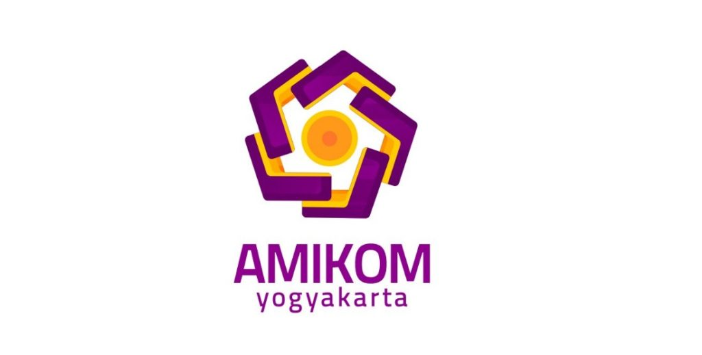

magister teknik informatika
Program magister teknik informatika program pascasarjana STMIK AMIKOM Yogyakarta diarahkan pada
hasil lulusan yang berbudi luhur, berjiwa entrepreneur dan memiliki kualifikasi sebagai beriku :
1. kemampuan merancang dan mengelola proyek-proyek perangkat lunak.
2. kemampuan menguasai aspek teknis dan manajemen dari pemanfaatan teknologi informasi.
3. kemampuan mengevaluasi dan menghadapi dampak dari teknologi informasi.
4. kemampuan mempunyai daya inovatif dalam menghasilkan produk/jasa teknologi informasi
5. kemampuan merancang, mengembangkan, dan mengimplementasikan proyek dalam bidang media digital.
| tahapan |
mata kuliah reguler |
| Semester 1 |
Analisys dan System Design |
| Design and Networking Management |
| Software Engginering |
| Information System |
| Database Management |
| Praktikum Aplikasi Internet |
| Praktikum Dasar Jaringan Komputer |